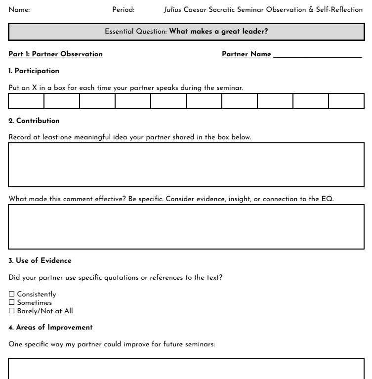
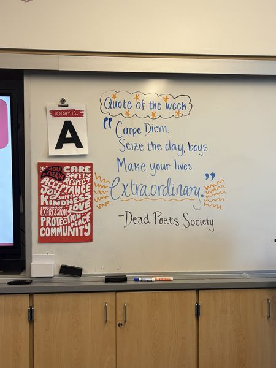
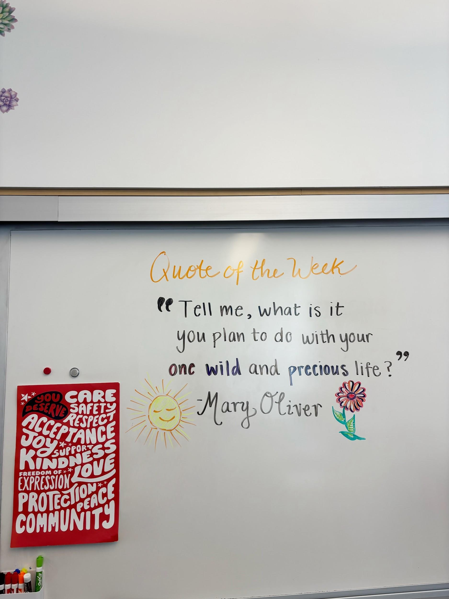
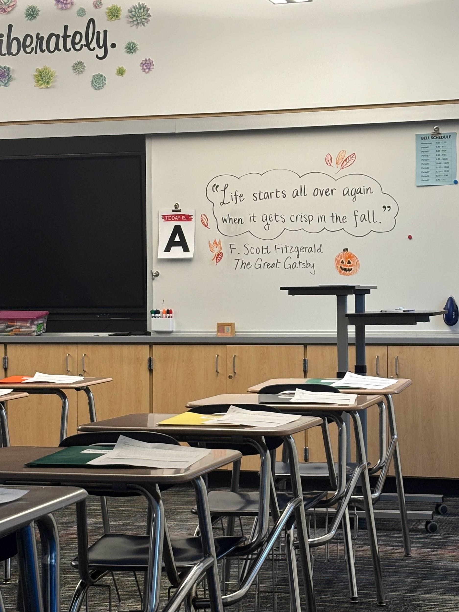
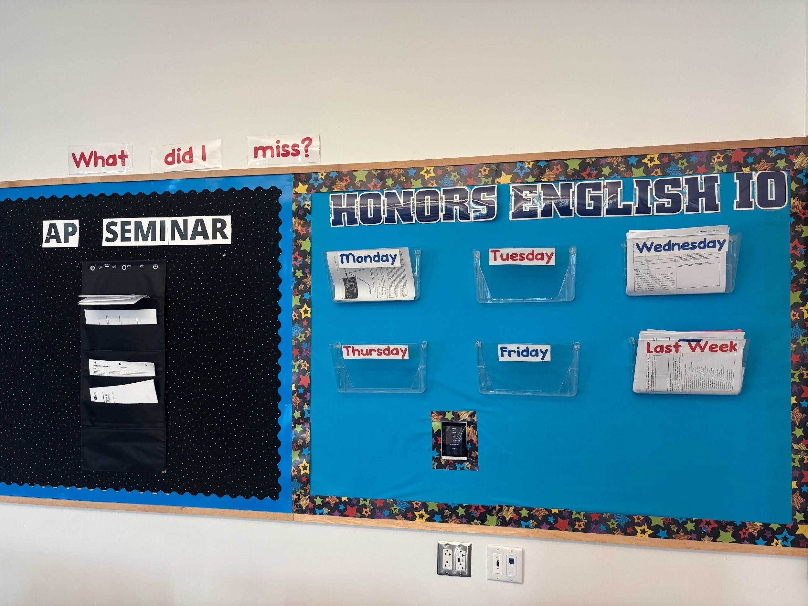
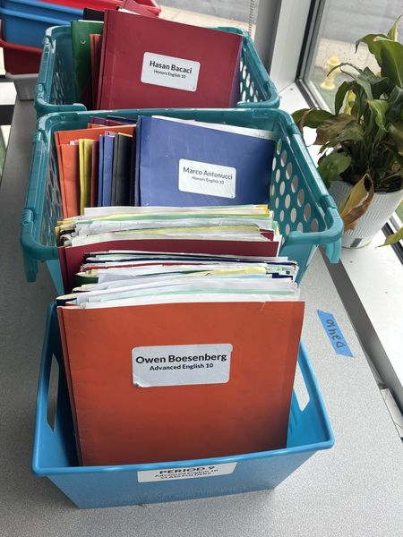
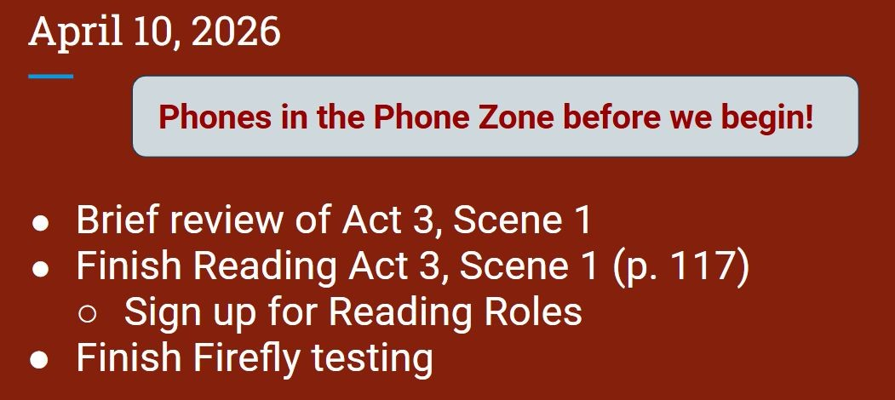
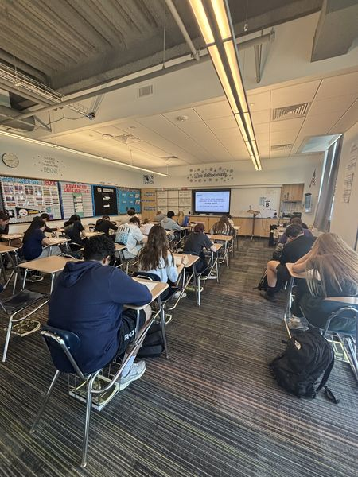

This domain captures the systems, structures, and cultural practices I used to create a classroom where students felt respected, accountable, and genuinely engaged in learning,not just compliant.
Component Highlights
A Socratic Seminar peer feedback sheet that built mutual accountability and helped students recognize each other as valuable intellectual contributors.
A weekly quote board connecting literature and language to students' real lives — communicating that learning extends far beyond assignments and tests.
Three classroom management systems: class folders, a "What Did I Miss?" wall, and a Phone Zone — all supporting student independence and accountability.
Assigned seating and multiple test versions used strategically in classes of up to 32 students — maintaining academic integrity and reducing distractions.
During the Julius Caesar Socratic Seminar, students completed a peer feedback sheet designed to build mutual accountability and respect. Students were expected to listen closely to their partner, track their contributions, and recognize meaningful participation.
During the seminar, students practiced respectful conversation: building on one another's ideas, using textual evidence, and giving each other space to speak. The feedback sheet helped students understand that a strong classroom discussion depends on mutual respect and trust, and it encouraged them to see their classmates as valuable contributors to shared intellectual work.
Part 1: Partner Observation - tracking speaking frequency and recording at least one meaningful idea. Part 2: Self-Reflection - evaluating their own contribution to the discussion relative to the essential question.

Click or tap any image to enlarge
Each week, I displayed a quote on the board that connected to the larger themes we were exploring in class: leadership, identity, growth, responsibility, or the power of language. Quotes ranged from Dead Poets Society to Mary Oliver, from F. Scott Fitzgerald to the essential question of the Julius Caesar unit itself.
The weekly quote board communicated something important: that learning extends beyond assignments and assessments, and that literature and language can connect directly to students' own lives, beliefs, and experiences. It created a shared point of reflection that set the tone for each week of instruction.



Click or tap any image to enlarge
In collaboration with my cooperating teacher, Mrs. Seigworth, I helped develop and implement three major classroom systems designed to support organization, routine, and student accountability.
Designated Class Folders: each student had a labeled folder in a classroom basket, making material distribution and collection organized and efficient for both students and teacher.
"What Did I Miss?" Wall: a bulletin board organized by days of the week, where students who were absent could independently locate and retrieve any work they missed without interrupting instruction.
Phone Zone: during tests and quizzes, students placed their phones in designated wall pockets. This reduced distractions, maintained academic integrity, and built a clear behavioral norm.
Together, these systems helped students understand classroom expectations, take responsibility for their own materials, and manage their behavior. This created a classroom that ran smoothly because students knew what was expected of them.



Click or tap any image to enlarge

Some of my classes were large — my biggest section had 32 students. Organizing the physical space was therefore a critical part of creating a focused, manageable learning environment.
I used assigned seating to ensure smooth transitions between instruction, group work, and assessment modes. During tests and quizzes, assigned seats combined with different test versions helped maintain academic integrity and significantly reduce the temptation for student distractions.
Intentional physical organization is often overlooked as a teaching skill, but for large classes especially, the way a room is configured directly impacts the quality of instruction and the ability to differentiate, circulate, and monitor student work effectively.